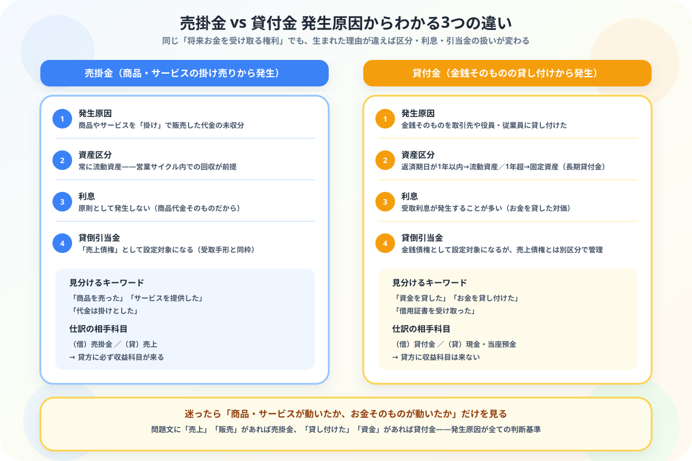

貸付金と売掛金の違いがわからない人へ
発生原因からスッキリ整理する図解ガイド
- 両方とも「将来お金を受け取る権利（資産）」——だから見た目が似ていて混同しやすい
- 本質の違いは発生原因——売掛金は「商品・サービスの掛け売り」、貸付金は「お金そのものの貸し付け」
- 貸付金だけ1年を超えると固定資産（長期貸付金）になる——売掛金は常に流動資産
- 貸付金には受取利息が発生することが多いが、売掛金には原則ない
こんにちは、大谷です！
僕自身、簿記の勉強を始めたばかりの頃、「売掛金も貸付金も、どっちも“将来お金がもらえる権利”でしょ？ だったら同じようなものじゃないの？」と本気で混同していました。テキストにはサラッと1行ずつしか書いてなくて、「結局この2つ、何がどう違うんだ……」とモヤモヤしたまま次のページに進んでしまった記憶があります。
でも実は、この2つを見分ける方法はたった1つ。「商品・サービスが動いたか、お金そのものが動いただけか」——この発生原因の違いさえ押さえれば、資産区分も利息の有無も、芋づる式に理解できるようになります。今日はそのシンプルな軸を、一緒に整理していきましょう！
また、記事の末尾のほうにある【いいねボタン】をポチッと押してもらえると、めちゃくちゃ嬉しいです！
❓ 発生原因の違い——「商品を売ったか」「お金を貸したか」
売掛金と貸付金はどちらも貸借対照表上は「資産」に分類されますが、発生した理由がまったく異なります。この1点を押さえるだけで、他のすべての違いが理解できます。

📝 ① 売掛金が発生するときの仕訳——商品・サービスの掛け売り
A社に商品 ¥50,000 を売り上げ、代金は掛けとした。
売掛金が発生する仕訳の相手科目は、必ず収益科目の「売上」です。これは売掛金が商品売買から生まれる証拠でもあります。
💰 ② 貸付金が発生するときの仕訳——金銭の貸し付け
取引先のB社に現金 ¥100,000 を貸し付けた。
貸付金が発生する仕訳の相手科目は、現金や当座預金などの資産科目です。お金がお金のまま形を変えただけなので、売上のような収益は一切発生しません。
📅 ③ 資産区分の違い——貸付金だけが「1年基準」で流動・固定に分かれる
売掛金は営業活動の中で短期間に回収される前提のため、常に流動資産です。一方、貸付金は返済期日を自由に設定できるため、決算日の翌日から1年以内に返済されるかどうかで区分が変わります。
| 勘定科目 | 返済・回収の目安 | 貸借対照表の区分 |
|---|---|---|
| 売掛金 | 常に短期（営業サイクル内） | 流動資産 |
| 貸付金 | 決算日の翌日から1年以内 | 流動資産 |
| 長期貸付金 | 決算日の翌日から1年を超える | 固定資産 |
決算日（3月31日）現在、C社への貸付金 ¥200,000 のうち、返済期日が翌年6月末（1年超）のものが含まれている。
決算日の翌日から数えて1年以内に回収・返済されるものを流動資産・流動負債、1年を超えるものを固定資産・固定負債とするルールです。売掛金は性質上ほぼ短期で回収されるため、この判定が問題になることはほとんどありません。貸付金は期間を自由に設定できるからこそ、この判定が必要になります。
💴 ④ 利息の有無——貸付金には受取利息が発生することが多い
売掛金は商品代金そのものなので、原則として利息は発生しません。一方、貸付金はお金を貸した対価として受取利息（収益）を受け取ることが多くあります。
例）元金100,000円・年利3%・貸付期間6ヶ月 → 100,000 × 3% × 6/12 ＝ 1,500円
年利率をそのまま掛けず「×月数/12」を忘れずに計算しましょう。
🔍 ⑤ 貸倒引当金の対象になるか——どちらも対象だが区分が異なる
売掛金・貸付金はどちらも回収できなくなるリスクがあるため、貸倒引当金の設定対象になります。ただし試験では扱いが分かれる点に注意が必要です。
| 用語 | 含まれるもの |
|---|---|
| 売上債権 | 売掛金＋受取手形（＋クレジット売掛金） |
| 金銭債権 | 貸付金・長期貸付金・未収入金なども含む広い括り |
売掛金と受取手形のみが対象で、貸付金は含まれません。逆に「金銭債権全体に設定する」といった指示があれば貸付金も対象に含まれます。問題文の指示範囲を必ず確認しましょう。
🧭 ⑥ 迷ったときの見分け方——問題文のこの言葉を探す
実際の試験問題では、発生原因を示すキーワードが必ず問題文に書かれています。以下の言葉を手がかりにしましょう。
| 問題文の表現 | 使う勘定科目 |
|---|---|
| 「商品を売り上げ」「サービスを提供し」「代金は掛け」 | 売掛金 |
| 「資金を貸し付けた」「金銭を貸与した」「借用証書と引き換えに」 | 貸付金 |
相手が自社の役員や従業員の場合は「役員貸付金」「従業員貸付金」という専用の勘定科目を使います。財務諸表での開示上、通常の貸付金と区別するためのルールです。
📋 まとめ：貸付金 vs 売掛金 早見表
「何が動いたか」さえ見抜けば、売掛金と貸付金はもう混同しません
商品・サービスが動いたら売掛金、お金そのものが動いたら貸付金——このたった1つの軸を手に入れたあなたは、もうテキストの1行だけの説明に迷わされることはありません。この記事が「あ、そういうことか！」につながったら、僕の執筆のモチベーション維持のために、この下にある【いいねボタン】をポチッと押してもらえると、めちゃくちゃ嬉しいです！
Study Questで今日の学習時間を記録して、簿記3級マスターへの一歩を刻んでおきましょう。